Bank import plugin
Introduction to the Bank Import Plugin
|
|
Bank Import Plugin Licence The Bank Import Plugin is included with the osFinancials5 Business class subscription. With a registered osFinancials5 Business class subscription, you gain access to import and process unlimited statements for each of your bank accounts. Upon purchasing the osFinancials5 Business class subscription, you will receive an email containing registration (activation) codes and detailed instructions. For unregistered versions of osFinancials5, a message may appear: "This demo plugin allows %s records to be entered. If you need more, please buy the product at https://www.osfinancials.org/en/webshop". We encourage users to support osFinancials by purchasing the osFinancials5 Business class subscription. This not only unlocks the full functionality of the Bank Import Plugin but also supports ongoing development and improvements. For users of osFinancials 4, the Bank Import Licence is available for purchase from our osFinancials webshop. |
The Bank Import Plugin in osFinancials empowers you to seamlessly download bank statement files from your online banking platform, provided by your bank or financial institution. These downloaded statements can then be effortlessly imported into the corresponding bank accounts, referred to as cash books within osFinancials.
This plugin supports the download of statements for multiple bank accounts and credit cards, accommodating users with diverse banking needs. It's essential to have the corresponding Payments and Receipts journals set up for each bank or credit card account within osFinancials.
By importing bank statements, transactions are automatically populated into the Payments and Receipts columns, eliminating the need for manual data entry. This automation not only saves time but also minimizes the risk of errors inherent in manual input.
The user-friendly interface of the Bank Import Plugin includes context menus that facilitate the location, selection, and search for specific transactions, debtors, creditors, or general ledger accounts. This enhances the navigation and management of bank transactions, contributing to efficient financial data handling.
Setting debtors, creditors, or general ledger accounts as open item accounts enables precise linking of debit and credit transactions, ensuring accurate tracking of outstanding balances and facilitating efficient payment and receipt management. The plugin allows flexibility in linking portions of payments or receipts to multiple outstanding transactions as needed.
Furthermore, the plugin enables the linking of accounts to specific debtors, creditors, or general ledger accounts, ensuring subsequent bank statement imports automatically allocate transactions correctly based on predefined account linkages. This feature streamlines transaction allocation, enhancing the accuracy of financial records and saving time.
Utilizing bank references, the plugin automatically allocates or links various transactions, such as payments, deposits, receipts, and other debits/credits, to the correct accounts within your Set of Books. This automation simplifies processes and reduces the need for manual intervention.
In summary, the Bank Import Plugin in osFinancials offers a comprehensive solution for importing bank statements, automating transaction allocation, and efficiently managing and reconciling bank accounts within your accounting system. With its array of features and functionalities, it not only reduces manual data entry but also enhances the accuracy and effectiveness of financial management processes.
Managing Bank Statements
Download and Save your Bank Statement
Before you can use this Bank import plugin, you need to download your Bank Statement from your financial institution and save it in a valid file format.
When downloading a bank statement; from your bank or financial institution; you may need to:
- Sequence to list your transactions, e.g. Date, Amount or Description.
- Select the correct start and end dates, for your requirements.
You may download bank statements for more than one bank account; credit card statements; etc.; provided that:
- You are registered for online banking at your bank or financial institution.
- Have a created separate Bank, Credit card accounts, etc. which is linked to its own Payments and Receipt journals).
If you have created and use the Petty Cash account as a Bank Account, you may still enter the transactions manually, if required.
Different Methods for Tracking Bank Transactions
You can keep track of your bank bookings in different ways, in this manual we will discuss the 2 most common ones.
- Statement method, where you make your bookings per statement from the bank.
- Benefits :
- You have a good check of the balances: the final amounts on the statement.
- Cons :
- The bank balances are not "up to date", you always fall behind "today" depending on the shear frequency.
- It is possible that there are 2 statements with the same date
- In the download, you will always download all bookings from that date
- These "extra" bookings must be deleted either before importing, or immediately after the import in the screen for assigning the reference
- Date method, in which you record the bookings by date.
- Benefits :
- The bank balances are "up to date", you are one day behind today.
- No corrections on downloads, with bookings of the same date appearing on 2 statements.
- Cons :
- None as far as known.
Enter cash / bank details according to the "statement method"
You prepare statement no. 1 to verify the data.
You now have 2 options for entering the transactions:
- You can download the statement and process it electronically via electronic banking.
- You can enter the statement manually.
Configuring the Set of Books for the Bank Import plugin
Activating the Bank Import Plugin
To activate the Bank Import Plugin's features, you must first check or confirm the setting. The Bank Import plugin uses a combined payment and receipt journal into a single journal for each bank account.
To activate the Bank Import plugin:
- Go to the Setup ribbon and select Setup → System parameters.
- Deselect (remove the tick) on the “Default bank reconciliation” to activate this plugin.
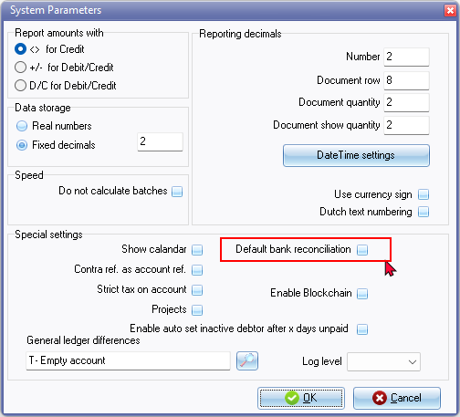
- Click OK. This will save your setting.
Settings for the bank account batch
Firstly, you will need to check and confirm the settings of the Bank entry batch.
- Go to the Default ribbon and select Cash/Bank entry . The “Bank statement options” screen is displayed:
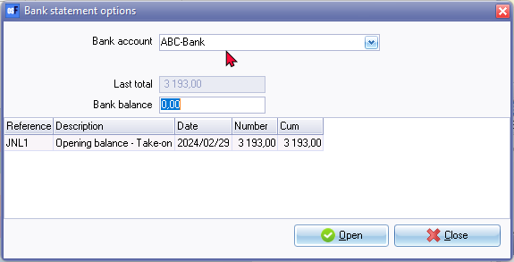
- Select the “Bank account” into which you need to import your bank statement. In this example, "ABC-Bank" is selected.
- Click Open. The "Batch entry" screen, is displayed, as follows:
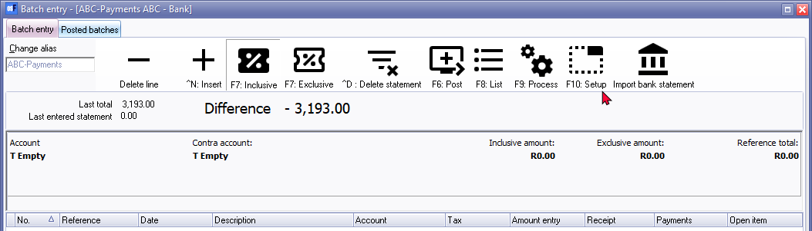
- Click F10: Setup . The "Options for this batch” - “Standard” tab is displayed:
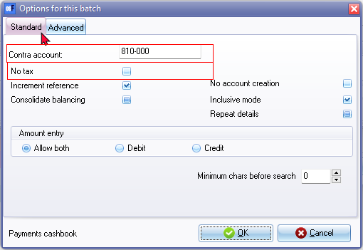
- Check the following items:
- The contra account is the Account code (number) of your bank account in your ledger.
- The check mark "No tax” should be 'on'. If you are not registered as a VAT (GST/Sales tax vendor you may leave this option unticked.
- Then click on the "Advanced" tab and accept the settings as below.
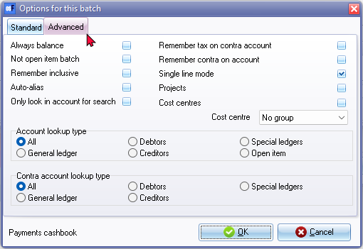
- Click on OK. if the settings are selected correctly. This will save your options and close the “Options for this batch” screen.
Working with the bank import plugin
Now all settings are checked/set correctly, transactions can be imported with the bank import plug-in.
Import Bank statements
On the Default ribbon and select Cash/Bank entry . The “Bank statement options” screen is displayed:
Select the “Bank account” into which you need to import your bank statement.
For the purposes of this tutorial, select “ABC – Bank”.
Click Open. The "Batch entry" screen, is displayed, as follows:
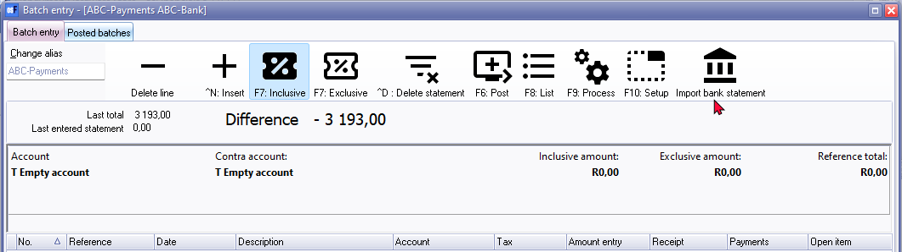
Click on the "Import bank statement" . The “Import bank statement” screen is displayed:
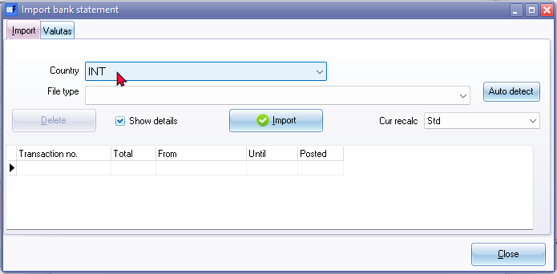
Select a file format. You may select a Country to list the available file formats supported for a specific country. See - Supported bank import file formats.
For the purposes of this tutorial, select the “INT-OFC / OFX standaard 2” file format.
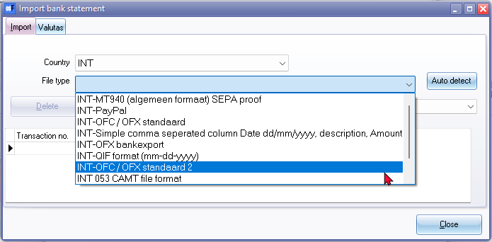
Then click on "Import".
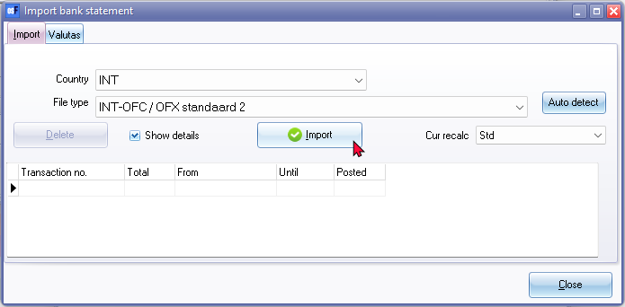
Select the “Show details” option. If the “Show details” is not selected (not ticked), the “Check” screen will not be launched.
The “Open” screen is displayed. Select the correct bank statement saved on your system.
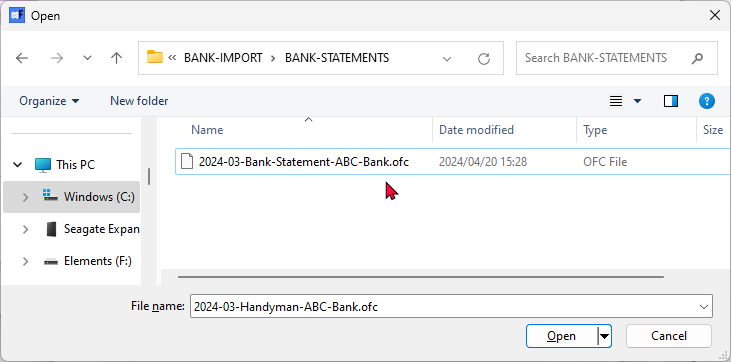
Click on Open. The transactions included in the bank statement file will be imported.
|
|
If the “Show details” option is not selected (not ticked) on the "Import" tab of the "Import bank statement" screen, the “Check” screen will not be launched. |

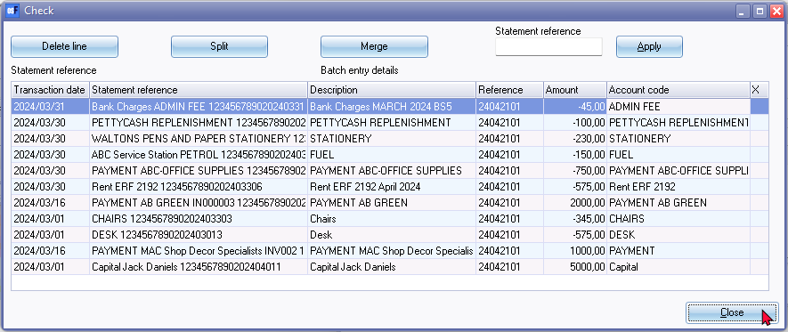
Check here if the transactions are correct. If a transaction is incorrect, this can be removed with the "Delete line" button. If a line is yellow, there is a change this transaction has already been imported into a previous import.
Check this transaction carefully!
Explanation of the "Check" screen:
|
Delete line |
This removes a selected line. For example, if it has been imported before. |
|
Split |
With this button, an amount can be split, for example, if one amount has been paid, but there are two VAT rates or one payment is made for more than one items, which need to be allocated to different accounts. |
|
Merge |
With this button amounts can be merged, for example if two payments are actually one invoice or need to be allocated to one account. |
|
Statement reference |
The reference is entered here, so that the payment can easily be retrieved later. Entering the statement reference it is not necessary, but you may need to enter for your specific requirements. |
|
Apply |
With the apply button, the reference is adjusted. |
If all statements are correct, click on Close. The screen below is displayed. In this screen, the imported bank statement(s), are listed.
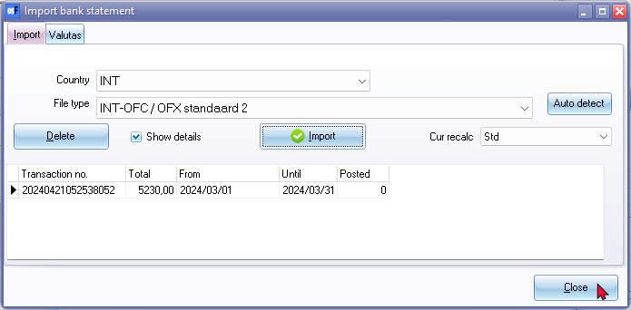
|
|
The details displayed on the “Import Bank Statement” screen is as follows:
If the bank import is done, the font colour will change to green. The colour of the font for this line will change from black to blue after the journal is updated or posted to the ledger. If the next bank statement is entered, the font colour will change to green. |
Click Close again to import the transactions in the bank statement into the batch. This closes the “Import bank statement” screen. The bank statement transactions is imported into the “Batch entry” screen for the selected bank account:

If there is already a reference on the Bank links tab for ledger accounts and on the Bank accounts tab for debtor accounts and creditor accounts that exactly matches the reference field of the bank statement, the transactions from the imported bank statement will automatically be allocated against the correct accounts.
This information will be displayed on the Match log tab of the journal.
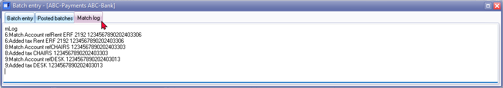
In this example, the transactions listed in the Match log tab, indicates that the imported transactions in lines 6, 8 and 9, is matched.
This means that the bank references in the the "Account code" column on the "Import bank statement - Check" screen, matches the existing references on the Bank links tab for these ledger accounts.
Managing bank references with VAT (GST/Sales tax)
If a matching "References" is entered in the Bank links tab of a ledger account, and there is an exact match on the bank reference on an imported bank statement, the account will be allocated to the correct account in the "Account"column of the "Batch entry" screen,
If VAT (GST/Sales tax) is applicable to transactions included in the import file of the bank statement, you need to link a Tax code from the "Link tax" list. This will ensure that the tax-code will be allocated to the correct account in the "Tax"column of the "Batch entry" screen,
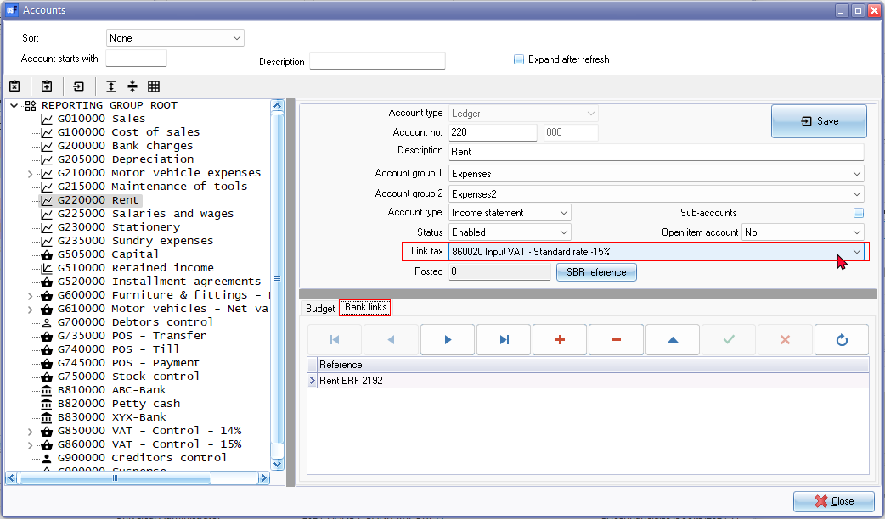
This setup streamlines the process of reconciling bank transactions by automating the allocation of transactions based on predefined references and tax codes, reducing manual effort and potential errors. It's a helpful feature for businesses dealing with a large volume of transactions and complex tax requirements.
Change the name of the Batch entry
Change the name of the batch (alias) (i.e. “ABC-Payments ABC-Bank”) of the Batch. In this example, "ABC-Bank-St.5" is entered in the “Change alias” field. This will identify the specific Bank statement for which bank is processed in the specific batch.
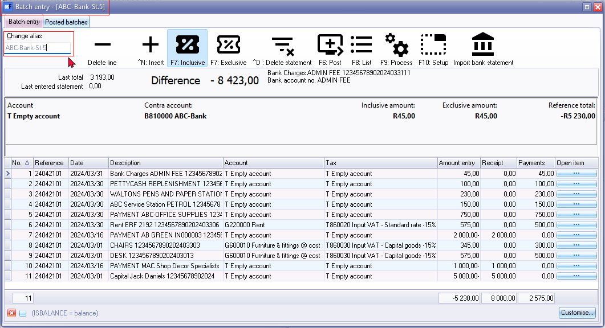
|
|
If you have imported an incorrect bank statement, you can click on the ^D: Delete statement icon. This will delete all imported transactions in the journal. |
Allocating transactions to ledgers / debtors / creditors
In the next step each transaction must be specified with an account (debtor / creditor / ledger) which belongs to the transaction.
This account can be allocated in the account column. There are different ways to link a transaction to an account.
- The account is looked up by account name.
- The account is looked up by looking up the corresponding document.
- The account is looked up by looking for a debtor or creditor account.
- The account is entered automatically, because it is linked to the (bank) account number (i.e. the debtor is entered because the debtor himself and his / her bank account are linked).
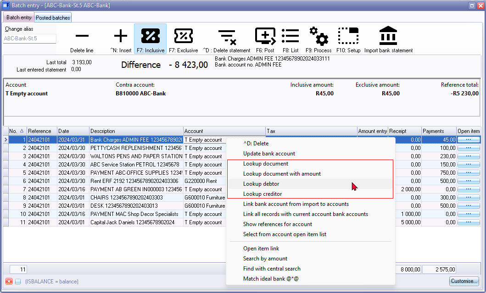
Account looked up by account name
The details on a bank statement will be available in the batch entry screen for the bank account. These details will be displayed, for each selected transaction, in the following options of the batch entry screen:
- Underneath the icons the descriptions as entered or processed by the bank.
- Description column.
These descriptions or details provide an important guide to identify and select the correct applicable account.
To allocate an account to a transaction by name:
- Select a transaction.
- Click on the Account column and enter a few characters of the descriptions. In this example, “ba” is entered. All the accounts containing “ba” is listed.
- Select “Bank charges”.
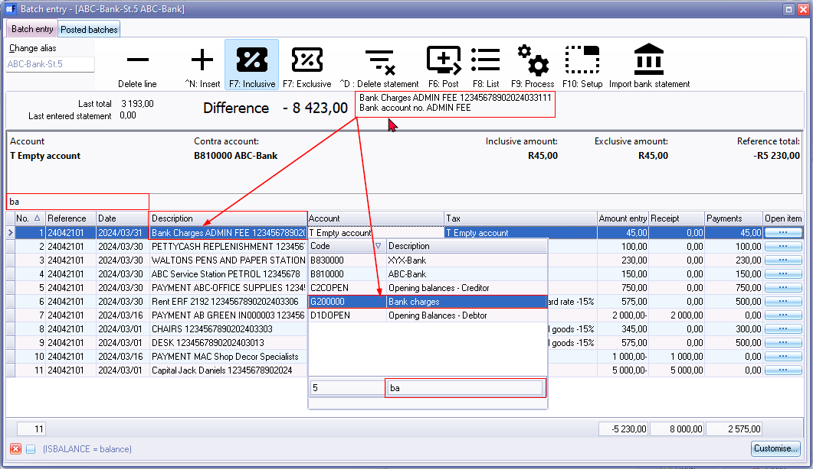
The account looked up by searching for the corresponding document
|
|
This way of allocating account to the transaction is only possible if there is a document (invoice / quote / credit note / purchase / purchase return / order). If the transaction belongs to a journal entry, this option cannot be used. |
To allocate an account to a transaction by document number:
- Select a transaction. In this example, “IN000003” is selected. The details from the imported bank statement displays 2 key details. You can now choose to select either “Document lookup”, “Document lookup with amount” or “Lookup debtor”.
- Right-click on the transaction line and select “Document lookup” or “Lookup document with amount” on the context menu. The document entry listing all invoices will be listed.
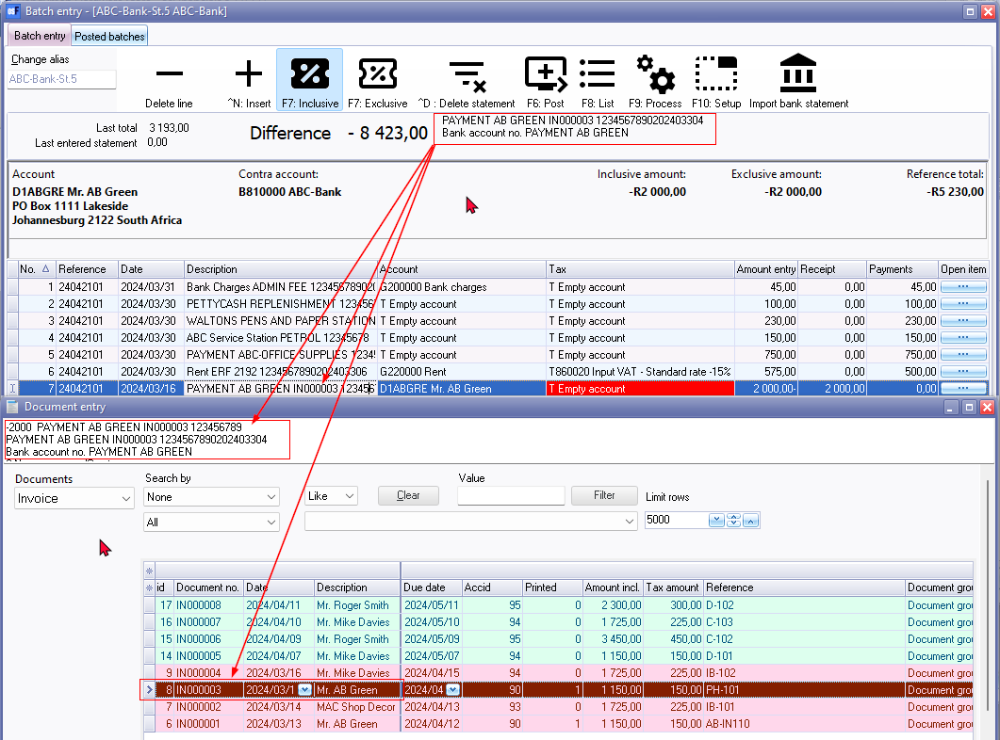
- Select “IN000003” for “Mr. AB Green”.
- Double-click to transfer the selected “Document” to the “Batch entry” screen.
In the "Lookup document" or “Lookup document with amount":
- With the first option, the “Document entry” screen will be opened and the correct document can be searched for.
- With the second option, “Lookup document with amount", a document with a corresponding amount will be searched for.
|
|
You may use the filter options, to filter for a specific document. If the document you are searching for is still unposted, it will not be listed if “Posted” is selected. You may then select “All or “Unposted” options to list unposted documents. |
With the double-click, the “Open item selection” screen will automatically be launched (if the Debtor account is set as an “Open item” account) . In the example of “Mr. AB Green”, the transaction can be directly linked (matched) to the specific invoice.
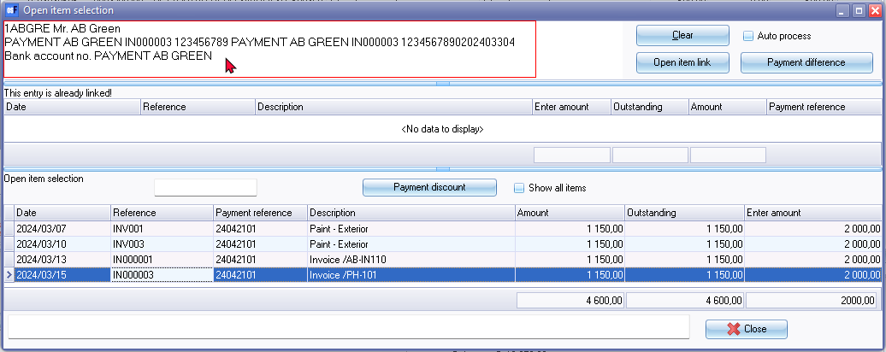
The payment details and the invoice, (i.e. invoice “IN000003”) is displayed. Since the 2,000.00 payment is more than the payment, you can select to link other outstanding invoices, e.g. “INV001” (Batch entry invoice) for the balance of the payment received.
The account looked up by searching for the Debtors / Creditors account
If a debtor or creditor name is in the details of the batch entry screen, you may select from the context menu to lookup a debtor or creditor account.
To allocate an account to a transaction by creditor account:
- Select a transaction. In this example, “PAYMENT ABC-OFFICE SUPPLIES” is selected.
- Right-click on the transaction line and select “Lookup creditor” on the context menu. The “Creditor accounts” listing all creditors (suppliers) will be listed.
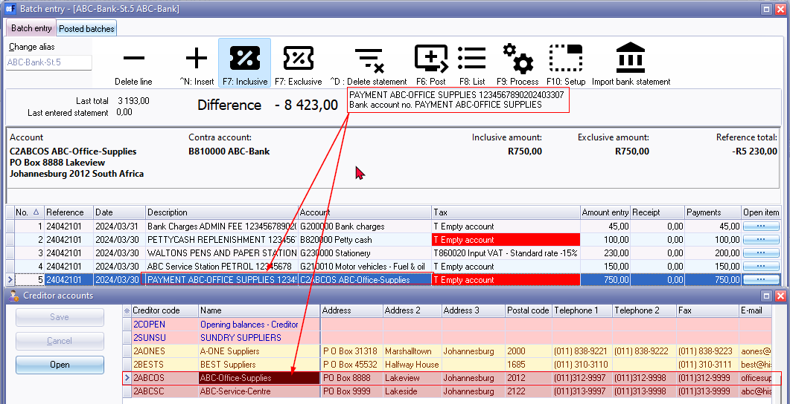
- Select “ABC-Office supplies”.
- Double-click to transfer the selected creditor account to the batch entry screen.
With the double-click, the “Open item selection” screen will automatically be opened (if the Creditor account is set as an “Open item” account. In the example of “ABC-Office Supplies”, the payment transaction can be linked (matched) to the batch transactions or documents.
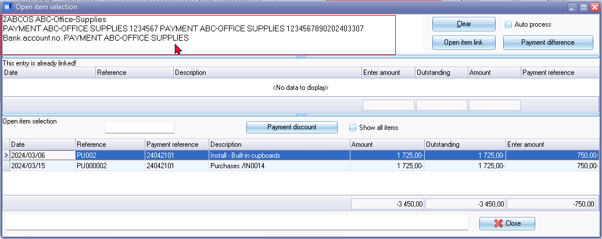
Select “PU002” (batch purchase) as the purchase transaction, for which this payment was made.
Press the Enter key and the linked transaction will updated in the “Batch entry” screen.
Account automatically selected as it is linked to the bank account number
It is also possible to link an account number to debtors/creditor/ledger account.
With this, transactions in the bank import are directly linked to the correct account. This linking can be done in several ways:
- If the number of the bank account of a debtor or creditor is known, this can be entered into the details of the relevant debtor/ledger/creditor.
The transactions with the same bank account number entered for the debtor / creditor will be linked to the correct account in the "Account" column. - It is also possible to link a bank account from a transaction. Stand on a transaction. The account (debtor, creditor or ledger) must be entered here for the first time.
Then click the right mouse button and choose "Link bank account". With the next transaction from this account, the account will be filled in automatically.
Managing Bank Accounts and Account Bank References
When Bank statements are imported, it will automatically import all transactions into the Batch entry screen (combined Payments and Receipts journal). You need to allocate the transactions to the correct accounts, as the bank statement does not know which accounts in osFinancials is matched to items on the bank statement.
osFinancials allows you to manage these references to specific accounts. When importing a bank statement, and the account links are correct, it will automatically allocate the bank statement transactions to the correct accounts.
When importing statements and these are not linked, e.g. new receipts, payments, etc., these will then be set to "Empty" in the Accounts column of the Bank accounts Batch entry screen.
To automate the process for allocating (selecting accounts) to an imported bank statement, please take not of the following settings:
General ledger accounts
- Bank References – This needs to be correctly entered on the Bank links tab. If this is correctly entered (edited), it will match the references as imported from bank statements.
- Tax (VAT / GST / Sales Tax) - If you are registered as a VAT / GST / Sales Tax Vendor, and VAT is applicable to the specific account, you need to link that account to the correct Input or Output Tax (VAT / GST / Sales Tax) account.
Debtor accounts
- Bank references - This needs to be correctly entered on the Bank accounts tab. If this is correctly entered (edited), it will match the references as imported from bank statements.
- Bank accounts – The Banking details for the Debtor (customer / client) account needs to be correctly maintained on the Accounting information tab of the Debtor account. This may be used to manage debit orders, refund debtors, etc. via the automated payments system. BIC (Bank Identifier Code) and IBAN (International Bank Account Number) accounts are also supported.
Creditor accounts
- Bank references - This needs to be correctly entered on the Bank accounts tab. If this is correctly entered (edited), it will match the references as imported from bank statements.
- Bank accounts – The Banking details of the creditor (supplier / vendor) account needs to be correctly maintained on the Accounting information tab. This may be used to pay creditors (suppliers) via the automated payments system. BIC (Bank Identifier Code) and IBAN (International Bank Account Number) accounts are also supported.
Account bank references - Details
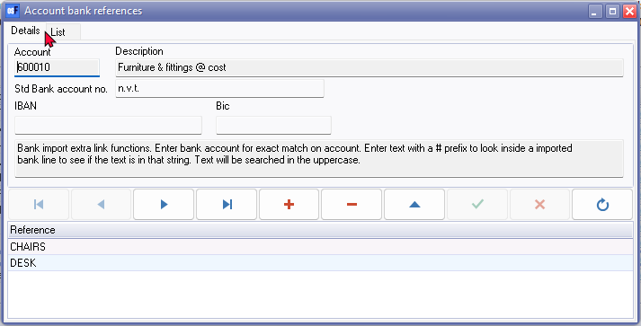
Account bank references - List
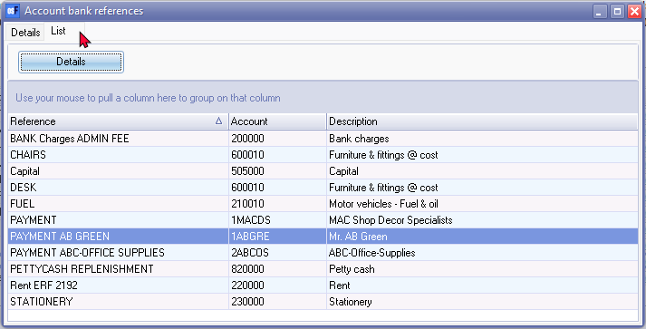
Account bank references - Check
Account bank references - Batch entry - Match log tab
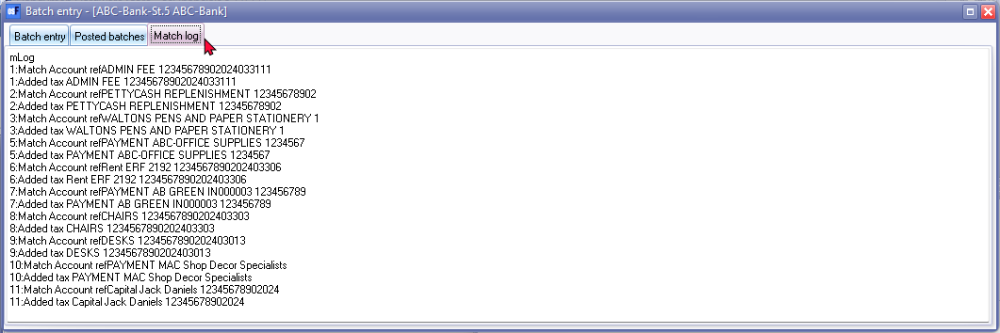
List the transactions in the batch
Post (Update) the transactions to the ledger
If all the transactions are correctly allocated to the correct accounts, the imported bank transactions can be posted (updated) to the ledger.
Click on the F6: Post icon.
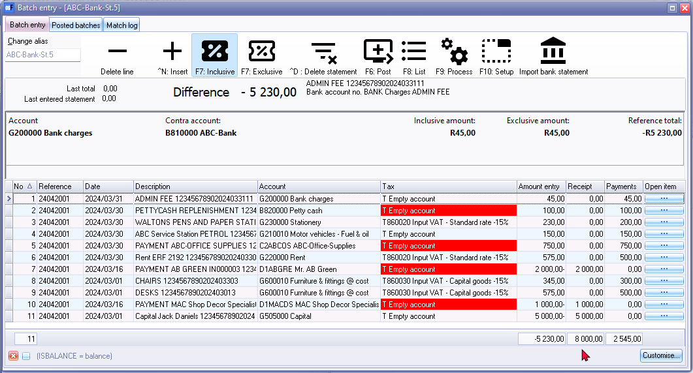
Since a transaction is posted from this bank account to another bank account (e.g. Petty cash) is posted, the following confirmation message, is displayed:
You are putting cash from a bank/cash directly to a bank/cash account! Do you wish to continue?
Line : 24042101 PETTYCASH REPLENISHMENT 12345678902 810000 ABC-Bank to 820000 Petty cash
Click OK on the confirmation message. The “Batch entry” screen will automatically be closed.
The “Bank statement options” screen is displayed:
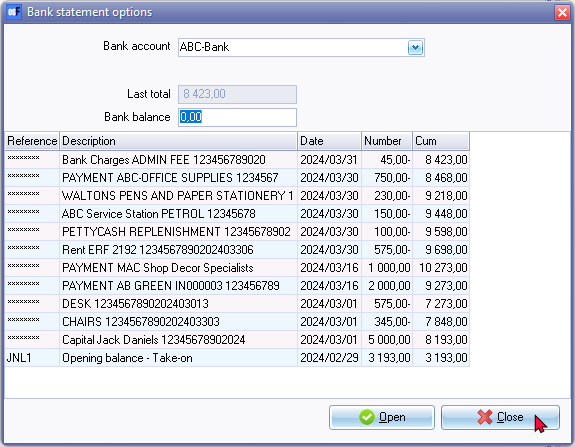
All the imported and processed bank statement transactions, which are posted (updated) to the ledger, will be listed.
Bank Import Check screen options
Before you close the “Import bank statement - Check” screen, you may delete a line, merge or split transactions.
Splitting transactions
If there any transactions on the “Import bank statement - Check” screen, you may split the transaction into two (2) or more entries.
You may need to do this, if a payment or receipt needs to be allocated to different accounts.
To do this on the “Import bank statement – Check” screen:
- Click on the transaction to split.
- Click in the Split button. You may also right-click and select the “Split” option on the context menu. The “Split” amount screen will be displayed.
- Enter the amount for the amount to split. It will insert another transaction with the same details as the selected transaction with the remaining amount.
- Click OK. Repeat the process, if necessary.
If this is not done at this stage (on the “Import bank statement – Check” screen), you may add it later on the Batch entry screen for the Bank account.
To do this on the “Batch entry” screen:
- Select the transaction and click on the ^N:Insert icon. In the blank row, enter the transaction details and the new amount.
- On the selected transaction to split, over type it with required amount. Repeat as necessary.
Merge transactions
If there are a few transactions on the “Import bank statement – Check” screen, you may merge (consolidate) it into one (1) entry.
To do this on the “Import bank statement – Check” screen:
- Press the Ctrl key and while holding your mouse down, click on the transactions to merge (consolidate).
- Click in the Merge button. You may also right-click and select the “Merge” option on the context menu.
To do this on the Batch entry screen:
- Select the transaction to be merged and over type the amount with the total of the transactions to be merged.
- Select the transaction to be deleted and click on the ^D:Delete icon. Repeat, as necessary.
Batch entry – Context menu options
This context menu offers advanced options to facilitate the editing, assignment of transactions to accounts, and management of imported transactions from bank statements within the "Batch entry" screen: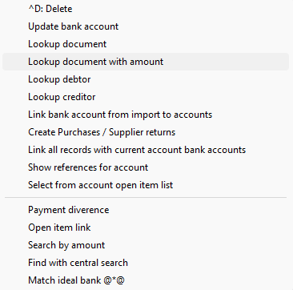
- ^D:Delete: Remove selected transactions from the "Batch entry" screen.
- Update bank account: Update references in the "Reknr" column to:
- Bank links tab of Ledger accounts (Setup → Accounts).
- Bank account references on the Bank accounts tab of debtor (customer/client) accounts (Debtors).
- Bank account references on the Bank accounts tab of creditor (supplier/vendor) accounts (Creditors).
- Lookup document: Locate a specific document using advanced search and filter options.
- Lookup document with amount: Locate a specific document by amount using advanced search and filter options.
- Lookup debtor: Find and locate existing debtor accounts. You may edit existing debtor accounts or create new ones if needed.
- Lookup creditor: Find and locate existing creditor accounts. You may edit existing creditor accounts or create new ones if needed.
- Link bank account from import to accounts: Update accounts with bank references from imported bank statements to ensure accurate transaction allocation.
- Link all records with current account bank accounts: Update accounts with bank references from imported bank statements.
- Show references for account: View, add, edit, or delete references for accounts, updating Bank links tab of ledger accounts and the Bank accounts tab of debtor and creditor accounts.
- Select from account open item list: Display transactions on the “Open item selection” screen for the selected account to link transactions in the "Batch entry" screen.
- Open item link: Launch the “Open item” screen for the selected account to select transactions or manage links to transactions.
- Search by amount: Search for transactions by amount.
- Find with central search: Launch the Search (Investigator) feature on the Default ribbon, allowing efficient search for specific accounts, documents, transactions, and more within the Set of Books.
- Match Ideal Bank @*@: A specific feature integrating iDEAL online payment method for payments or transactions within the Bank-import plugin.
Debtor account - Context menu options:
- Go to document: List the document grid with the selected document.
- Create Invoices / Credit notes: Create an invoice or a credit note for transactions imported from the bank statement if none is available.
- Payment divergence: Launch the Receive payment screen to process adjustments or receipt transactions if a payment recorded in the bank statement does not match any existing transaction in the accounts.
Creditor account - Context menu options:
- Create Purchases / Supplier returns: Create a purchase or a supplier return document for transactions imported from the bank statement if none is available.
- Payment divergence: Launch the Receive payment screen to process adjustments or receipt transactions if a payment recorded in the bank statement does not match any existing transaction in the accounts.
Supported bank import file formats
If your bank or financial institution's available file formats, is not currently supported (cannot be imported in this Bank import plugin), please send us one downloaded file, and we will implement support for your bank or financial institution's bank statement format.
Country specific formats
|
Country |
File |
Comment 1 |
Remarks |
|
Belgium |
|||
|
BE |
Fortis bank |
Comma separated |
|
|
BE |
ING |
Comma separated |
|
|
BE |
KCB |
|
|
|
BE |
KCB |
Comma separated |
|
|
BE |
Paypal |
|
|
|
BE |
Recordbank |
Comma separated |
|
|
France |
|||
|
FR |
INT-ofx general format |
OFX [Open Financial eXchange file] |
|
|
Netherlands |
|||
|
NL |
ABN-AMRO |
Tab delimited |
|
|
NL |
Afterpay |
|
|
|
NL |
Fortis bank |
Tab delimited |
|
|
NL |
Frieslandbank |
Comma separated |
|
|
NL |
Icepay |
|
|
|
NL |
iDeal |
Comma separated |
Download from Dashboard |
|
NL |
iDeal |
Comma separated |
Email from dashboard (rapport) |
|
NL |
ING |
Comma separated |
|
|
NL |
Mastercard Creditcard |
TSV |
|
|
NL |
MCG |
|
New |
|
NL |
MT940 |
General format |
|
|
NL |
MT940 |
General format |
On booking date |
|
NL |
MT940 Rabobank |
|
|
|
NL |
MT940 SNS bank |
|
|
|
NL |
MT940 Triodos bank |
|
|
|
NL |
Multi Safe pay |
MT940 (General format) |
|
|
NL |
Paypal |
|
|
|
NL |
Postbank |
Comma separated (CSV) |
|
|
NL |
Postbank |
Comma separated (CSV) |
New |
|
NL |
Rabobank |
Comma separated (CSV) |
Fixed length |
|
NL |
Rabobank |
Comma separated (CSV) |
ideal payment id |
|
Spain |
|||
|
SP |
SP-MT940 Triodosbank |
|
|
|
United Kingdom |
|||
|
UK |
UK-HSBC UK Transaction File |
|
|
|
United Sates of America |
|||
|
USA |
Bank of America – Quicken QIF 4 digit |
QIF [Quicken Interchange Format] |
|
|
USA |
Bank of America – Comma separated |
Comma separated (CSV) |
|
International (universal) formats
In addition to a various file formats for the Belgium, Netherlands, France, Spain, United Kingdom and United States of America environments, the following file formats are currently supported for the international banking environments:
|
Country |
File |
Comment 1 |
Comment 2 |
Remarks |
|
INT |
INT-MT940 (algemeen formaat (SEPA proof)) |
|
|
|
|
|
INT-PayPal |
|
|
|
|
|
INT-OFC/OFX standaard |
OFC [Open Financial Connectivity file] / OFX [Open Financial eXchange file] |
|
|
|
|
INT-Simple comma separated column Date dd/mm/yyyy, description, Amount . is thousandseperator |
Simple comma seperated |
Comma separated (CSV) |
|
|
|
INT-OFX bankexport |
OFX [Open Financial eXchange] |
|
|
|
|
INT-QIF format (mm-dd-yyyy) |
QIF [Quicken Interchange Format] |
|
|
|
|
INT-OFC / OFX standaard 2 |
OFC [Open Financial Connectivity file] / OFX [Open Financial eXchange file] |
|
|
|
|
INT 053 CAMT file format |
|
|
|